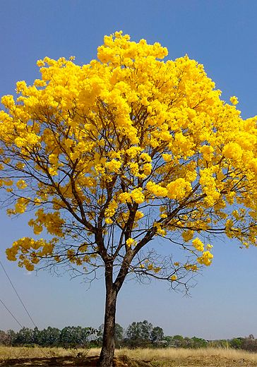

Ipê
O ipê é uma árvore majestosa e muito apreciada por suas flores vibrantes e ornamentais, que surgem em diversas cores, como amarelo, roxo, rosa, branco e, mais raramente, verde. Pertencente ao gênero Handroanthus, o ipê é uma árvore nativa das Américas, especialmente comum em regiões tropicais e subtropicais da América do Sul, incluindo o Brasil.
O ipê é uma árvore majestosa e muito apreciada por suas flores vibrantes e ornamentais, que surgem em diversas cores, como amarelo, roxo, rosa, branco e, mais raramente, verde. Pertencente ao gênero Handroanthus, o ipê é uma árvore nativa das Américas, especialmente comum em regiões tropicais e subtropicais da América do Sul, incluindo o Brasil.
O ipê pode atingir alturas de 7 a 30 metros, dependendo da espécie, e possui um tronco robusto com casca rugosa. Suas folhas são compostas por folíolos pequenos e finos, e suas flores, que aparecem geralmente no final do inverno ou início da primavera, criam um espetáculo visual, cobrindo a árvore inteira, muitas vezes antes do surgimento das novas folhas. Essa floração intensa atrai polinizadores, como abelhas e pássaros, tornando o ipê importante para o ecossistema.
Além de sua beleza, a madeira do ipê é altamente valorizada por ser extremamente resistente e durável, sendo usada na construção civil e na fabricação de móveis. O ipê amarelo, em particular, é considerado a árvore símbolo do Brasil.